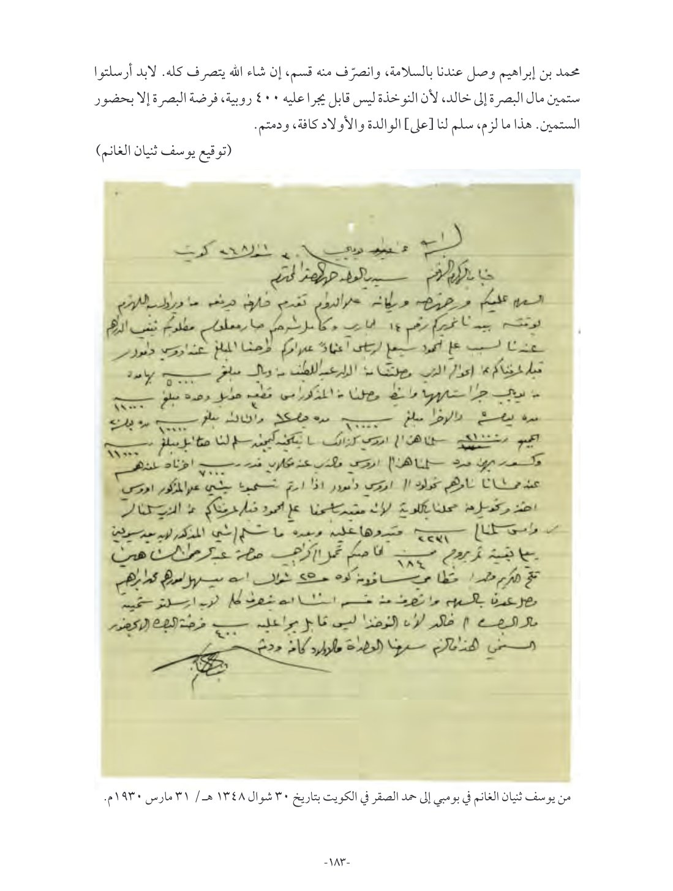

٣٠ شوال ١٣٤٨هـ (٣١ مارس ١٩٣٠م) · رسالة تجارية من وثائق أسرة الصقر
محمد بن قطامي يسافر من غوا: رسالة من بومبي إلى حمد الصقر
ما هي
يكتب يوسف ثنيان الغانم من بومبي إلى خاله حمد الصقر في الكويت عن الحوالات والبضائع، ويذكر في آخر الرسالة أن عبدالرحمن الشاهين في «فتح الكريم» ومحمد بن قطامي سافروا من كوه (غوا) في ٢٥ شوال ١٣٤٨.
أهميتها
تضع محمد على خط الهند نوخذة في مارس ١٩٣٠، بين سجليه في ١٩١٣ و١٩٣٣، وقبل مقتله في أحداث المجلس بتسع سنوات.
من المقصود
تذكر الرسالة محمد بن قطامي فقط، وكان محمد الذي يسافر إلى الهند نوخذة من عائلتنا سنة ١٩٣٠ هو محمد عبدالعزيز القطامي، وقد أكدت العائلة ذلك.
صور الصفحات


النص الأصلي
ملاحظات
يطبع الكتاب نص الرسالة كاملا في ص ١٨٢ وصورة الأصل المكتوب بخط اليد في ص ١٨٣، واقتُبس هنا الجزء الخاص بالسفن فقط. و«كوه» هي غوا على الساحل الغربي للهند.
أسماء أخرى
المصادر
د. فيصل عادل الوزان، تجارة النقل البحري في الكويت من خلال سيرة حمد عبدالله الصقر، مركز البحوث والدراسات الكويتية، ٢٠١٩، ص ١٨٢ و١٨٣. ونسخة محفوظة في درايف العائلة.
مرجع الأرشيف
- Al-Wazzan 2019, pp. 182 to 183 · رسالة يوسف ثنيان الغانم إلى حمد الصقر
كيف كُتب هذا النص: النص العربي كما طبعه الكتاب. الترجمة الإنجليزية من Claude، يرجى مراجعتها.
افتح في الموقع التفاعلي